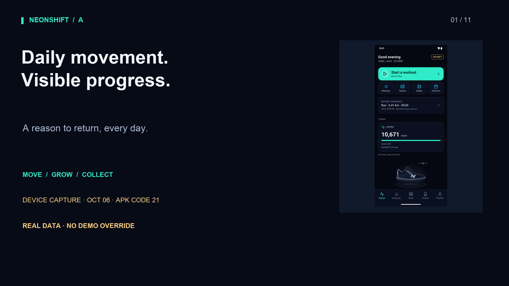
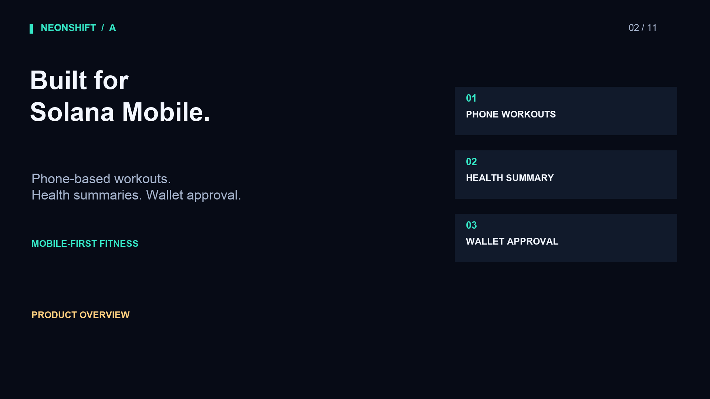
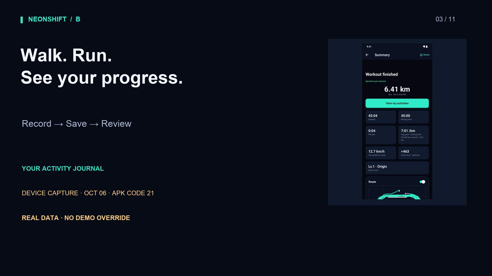
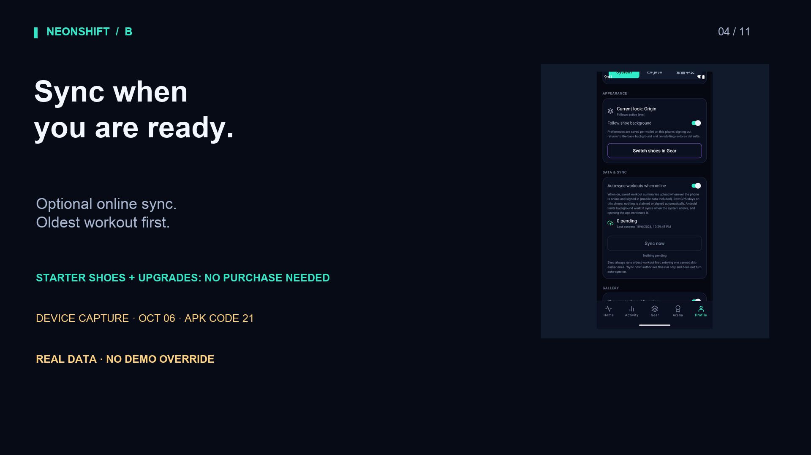
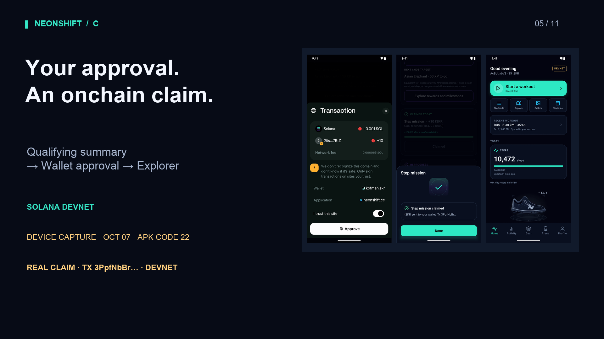
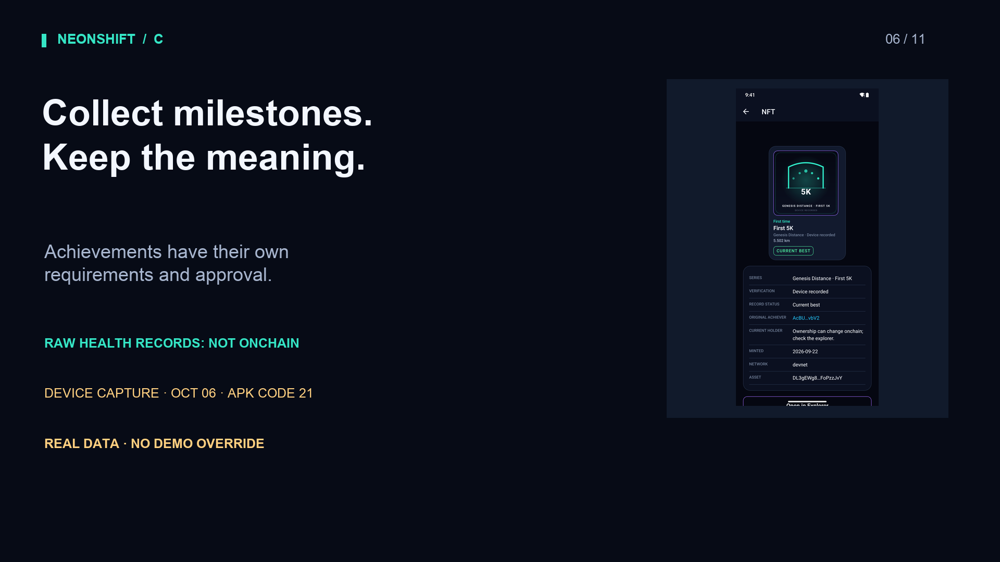
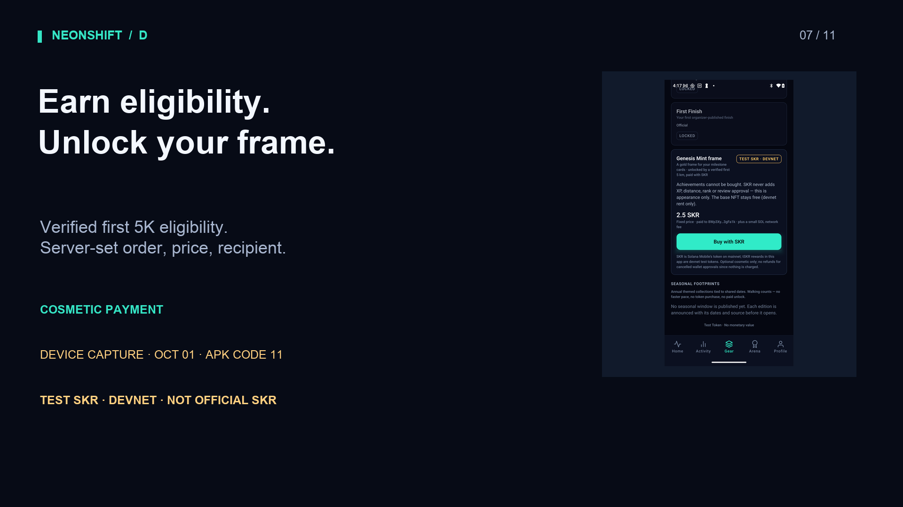
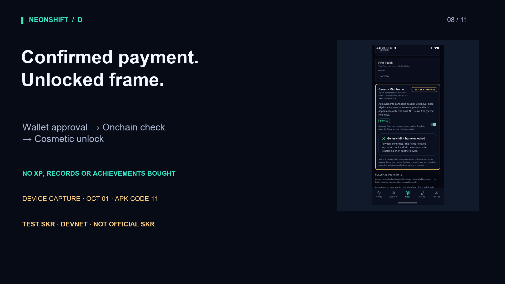
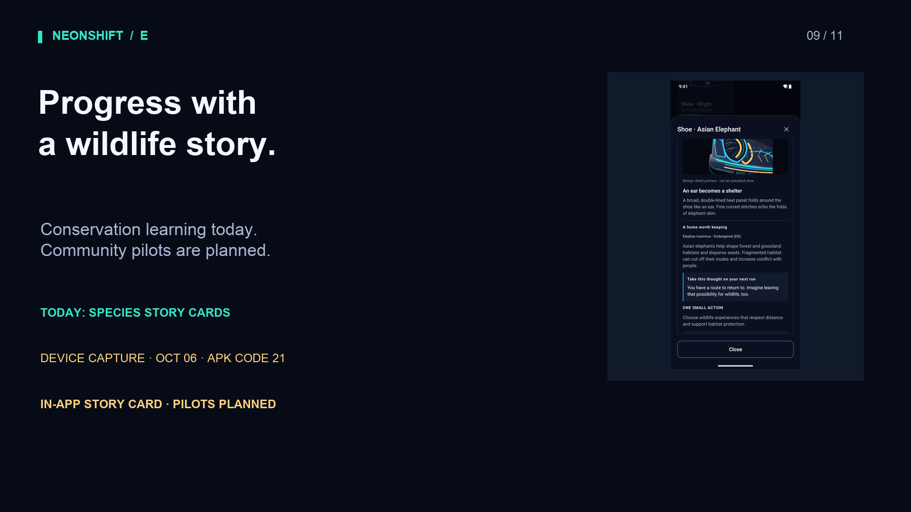
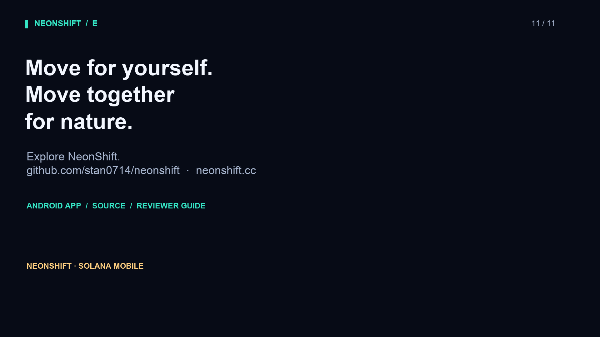

01 · 12 s · What keeps us moving after the first few days? NeonShift turns everyday movement into visible progress, wildlife-inspired shoes, and a reason to return.

02 · 13 s · Built for Solana Mobile, it connects daily activity with achievements you can collect and verify.

03 · 17 s · Start with a walk or a run. Record your workout, save it on your phone, and review your progress in the Activity journal.

04 · 18 s · Choose automatic sync when online, with saved workouts processed oldest first. Starter shoes and level upgrades remain free. Recording a workout does not automatically qualify you for a reward.

05 · 18 s · Qualifying activity connects to a claim on Solana devnet. For daily steps, an Android Health Connect summary is checked before wallet approval. View the resulting transaction in the explorer.

06 · 17 s · Raw health records are not published onchain. Achievement collectibles have their own requirements and approval process. The blockchain records the claim, not every step.

07 · 22 s · NeonShift gives token payments a cosmetic purpose. Eligible first-five-kilometer runners can unlock a Genesis Mint frame, paid with a test token on devnet. The server sets the order, price, and recipient.

08 · 23 s · Review the details, then approve in your wallet. After the server verifies the confirmed transfer onchain, the frame unlocks for that wallet. This payment uses test tokens, not official SKR. It buys no experience points, records, or achievements.

09 · 12 s · Wild Guardians connect your progress with conservation learning. Local community pilots are planned. No partnership or donation is claimed.
10 · 13 s · Next, stake SKR to boost daily mission rewards, with higher boosts at higher shoe levels. A fixed share of the boost will fund a separately tracked wildlife conservation pool. Rates are not final.

11 · 12 s · Explore the Android app, source code, and reviewer guide through the submission links. Move for yourself. Move together for nature.